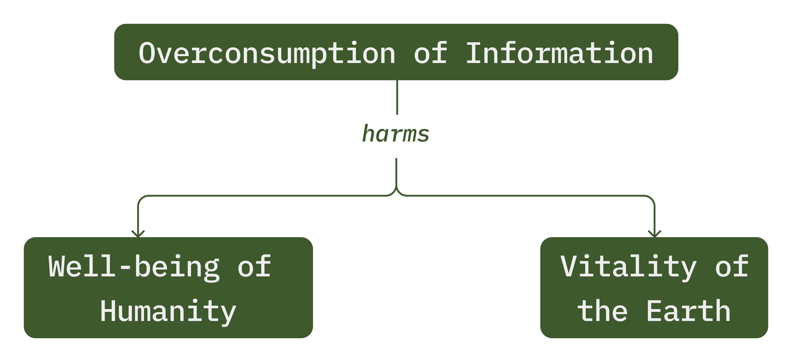

Speculating how digital products could help users reduce their digital carbon emissions and overconsumption of information, this project examines and applies strategies from the natural world. Principles of green design are also incorporated to envision an energy-efficient operating system for mobile devices.
View our slidedeck for this project from Pratt's Info Show 2024.
When: September - December 2023
Team: Mary Haws (me), Alexis Li
My Role: research, biomimicry, persona creation, green design
Design Space
Overconsumption of information: understanding systemic problems in technology
This project originated from our shared curiosity in attempting to mitigate environmental harms caused by the digital products we, as designers, work with regularly.
We identified the overconsumption of information as our problem of focus, and its consequences for the well-being of humanity and the vitality of the earth:

Researching this problem and its consequences on a deeper level allowed us to reflect on how UX and human-centered design practices, which are inherently anthropocentric, contribute to these issues, and how our design process could undermine the status quo of the tech industry.
The overconsumption of information manifests in high amounts of screen time throughout the world
According to research from Data Reportal, the average user around the world spends 6 hours and 35 minutes per day on screens, and the number of internet users steadily increases each year. This increasing overconsumption impacts humans, the earth, and the bonds between them.
The well-being of humanity suffers when attention is degraded as a result of information overconsumption
A study conducted in 2019 found that the increase in the production and consumption of content causes topics to be popular for shorter periods of time (Lorenz-Spreen et al., 2019). This quick turnover of trending media exhausts attentional resources, making people more anxious, impulsive, and disconnected.
“Our modeling suggests that the accelerating ups and downs of popular content are driven by increasing production and consumption of content, resulting in a more rapid exhaustion of attention resources.”
Lorenz-Spreen et al., 2019
The vitality of the earth declines as digital carbon emissions increase
The internet accounts for about 4% of global carbon emissions, which is equivalent to the emissions of the entire aviation industry. The energy consumed by device usage accounts for more than half of digital product emissions, with the rest used by data centers and networks. High amounts of screen time and the unchecked growth of the tech industry has dire consequences for the health of the planet and its inhabitants.
Climate change brings about more extreme weather, such as intense heat waves and storms, which undermines the balance of nature by destroying entire ecosystems, displacing or killing wildlife, and threatening communities around the world. The abundant wisdom of the earth is ignored or overwritten for the sake of digital worlds, which is why our project attempts to reconcile these spaces.
Research
We looked to the more-than-human world for design wisdom
Our research questions captured current issues and our goals for a more sustainable product
We used biomimicry to uncover strategies for conserving energy and preventing overconsumption
Biologizing our research questions helped us focus on the techniques nature could teach us:
Hibernation revealed how nature conserves energy
Hibernation is a long-term state with significantly decreased body temperature, slowed metabolism, and a coma-like condition, allowing for energy conservation.
The drop in body temperature during hibernation happens at a set point, and activates metabolism to utilize stored fat as a source of energy. This metabolic process can also raise the animal's body temperature when needed.
Predator/prey relationships revealed how nature limits consumption and maintains balance
Based on the Lotka-Volterra predator-prey model, predator and prey populations maintain a dynamic equilibrium in nature. This means that an increase in prey will lead to an increase in predators, which will then cause a decrease in prey followed by a decrease in predators.
The predator-prey population cycle demonstrates how nature maintains a balance: predators cannot overconsume a finite prey population for long without consequence to their own population.
Prey employ strategies that also help limit consumption
Piping plovers use camouflage and distractions to protect their nests from predators.
Plover eggs look like pebbles on the beach, which helps disguise them from predators.
Adult plovers also use an elaborate distraction technique to protect their nests: they fake a broken wing to draw predators away, then take off at a safe distance.
Sensitive plants rapidly fold their leaves when touched to appear smaller and less attractive to predators, while also optimizing their energy usage.
The plants adapt the time spent opening and closing their leaves to the types of stimuli they experience. Non-damaging stimuli lead to quicker reopening of leaves.

What did we learn from nature?
To save energy, nature uses:
To limit consumption, nature uses:
Balance between predator and prey populations over time
Camouflage to disguise prey from predators
Distractions by prey to confuse predators
Temporarily unattractive features of prey to deter predators
We investigated how greener designs are technically accomplished
We discovered a variety of green design strategies that could be incorporated into our designs, including energy-efficient color palettes, text-based content over images, dark and focused modes, and compressed media.
Empathy
We created two personas, human and non-human, to understand how our designs could impact vulnerable stakeholders
Non-human stakeholders like trees are harmed by the energy waste produced by digital products and infrastructure
In 2022, Microsoft was approved to cut down over 2600 trees in San Antonio to make room for a data center. This permitted Microsoft to bypass the usual city code regarding how many old-growth trees should remain on site:
“Microsoft received approval to remove 2,642 trees from a 33-acre tract of land...
The city's code...stipulates that at least 20% of heritage trees, which measure more than 24 inches in diameter, and 20% of significant trees, more than 6 inches, must be kept on-site.
Microsoft's plan will leave nearly 4.5% of heritage trees and 3% of significant trees.”
Iris Dimmick, San Antonio Report, January 2022
We imagined Clive Oakley, a non-human persona of a live oak tree inspired by the scenario in San Antonio:
Young people are especially vulnerable to the consequences of information overconsumption
Technology has been reshaping our minds, relationships, and institutions. A lack of accountability in the industry has led to unprecedented consequences, especially for young people:
Emily Bailey is our human persona representing the fraught relationships young people often have with technology:
Design
We imagined a mobile operating system that would limit information consumption and prioritize energy efficiency
Why did we design an operating system?
Operating systems already consider how to keep hardware and software running efficiently together, making it a good candidate for incorporating sustainability features. We saw an OS as a deeper solution than an application, as a potential ideal state for our designs.
Our OS designs incorporate 4 key features:
Feature #1: Energy efficient color palette
Dark hues, reds, and greens are the most efficient colors on OLED screens, so they make up our primary palette. Blue consumes the most energy and is avoided in our design.
Feature #2: Hibernation mode
Inspired by hibernation, piping plovers, and green design strategy, we devised a hibernation mode that would help users conserve energy and reduce information overload. It incorporates four stages, a limited color palette, and temporarily reduced performance for some applications. Camouflage is used for some application during stages of hibernation.
The stages of hibernation mode are dictated by the amount of carbon used during wakefulness, and saved during hibernation. These carbon metrics are made transparent to users via notifications when the system in entering and leaving hibernation.
Feature #3: Energy optimization algorithm
The start and end of hibernation mode, and the carbon used or saved at each point, would need to be determined by an algorithm. Mimicking the energy optimization tactics of sensitive plants, and the balance maintained in predator-prey relationships, our OS would give users a limited amount of carbon to use across a series of hibernation cycles.
Low consumption activities would lead to longer wakefulness and shirt hibernation; high consumption activities would lead to shorter wakefulness and longer hibernation. This logic would balance the hibernation cycles and user activity throughout.
Feature #4: Low-energy distractions
We created distractions, or low-energy activities, that would be suggested to users during hibernation when other applications are limited. These distractions would not only entertain users, but also promote green digital practices and incorporate weather and time to engage the natural environment.
Meditations and games would be suggested to users to promote mental well-being and use minimal energy.
Housekeeping helps users manage their energy usage and data storage. For example, the system can suggest that users delete photos or videos that they haven't interacted with in a while, or that users download songs that they have streamed frequently.
Reflection
This operating system and its features would benefit human and non-human stakeholders like Clive and Emily. It could help reduce energy usage and land exploitation, directly benefitting Clive and other non-humans. Hibernation mode and low-energy distractions in our system would help human users like Emily manage their consumption. Most importantly, the benefits from more democratic technology (that is, technology that considers the needs of humans and non-humans) are shared among every being on earth.
Rachel Carson wrote in Silent Spring that, “in nature, nothing exists alone.” This project has inspired us to think more deeply about our relationships with each other, our devices, and the planet, and we hope it can inspire others to do the same. But our speculative design does not address the systemic changes that needs to happen for a more sustainable future. Because of this project, we will think more critically about the role of our designs in a broader movement towards humane and sustainable systems.